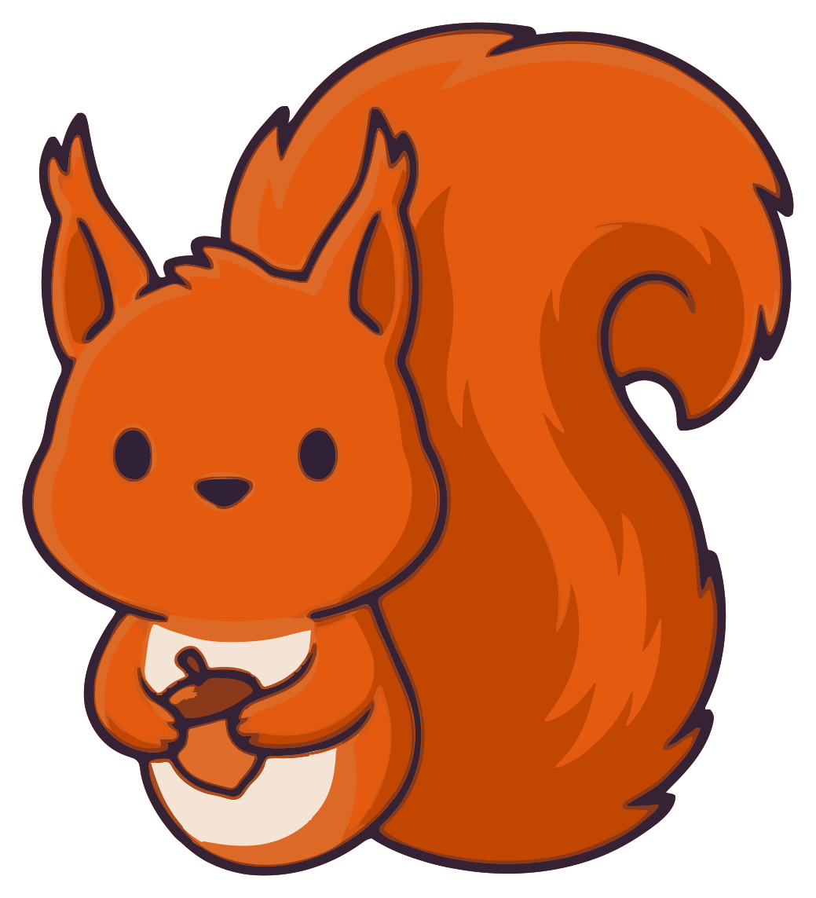
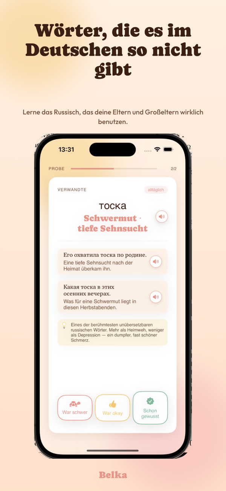
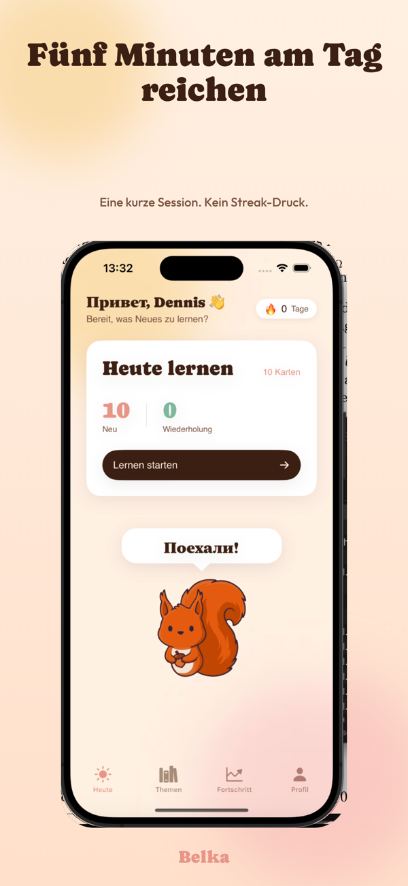
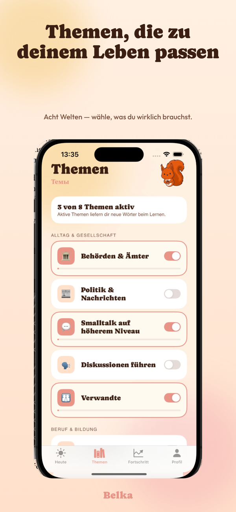

Wortschatz mit Bedeutung
Keine Tourist-Phrasen, keine "Apfel"-Karten. Belka konzentriert sich auf das, was du im Erwachsenenleben wirklich auf Russisch sagen willst — Beruf, Politik, Bücher, Behörden, Beziehungen.

Eine kleine iOS-App für deutschsprachige Menschen mit russischen Wurzeln — kein Anfängerkurs, kein Login, kein Streak-Druck. Nur die Wörter, die du wirklich brauchst.
Eine Mail, wenn Belka im App Store ist. Sonst nichts.
Keine Tourist-Phrasen, keine "Apfel"-Karten. Belka konzentriert sich auf das, was du im Erwachsenenleben wirklich auf Russisch sagen willst — Beruf, Politik, Bücher, Behörden, Beziehungen.
Belka — das Eichhörnchen — wartet ruhig auf deine fünf Minuten am Tag. Kein Punkte-Spiel, keine Edelsteine, keine Erinnerungs-Spam. Eine verteilte Wiederholung, die wirklich lernt, was du schon kannst.
Gemacht für Russisch-Deutsche, die zuhause Russisch sprechen, im Alltag Deutsch — und merken, dass die zweite Sprache irgendwo zwischen Kindheit und Telefonaten mit den Eltern stehen geblieben ist.
Klein, ruhig, mit Wärme. Auf deinem iPhone, ohne Konto.


